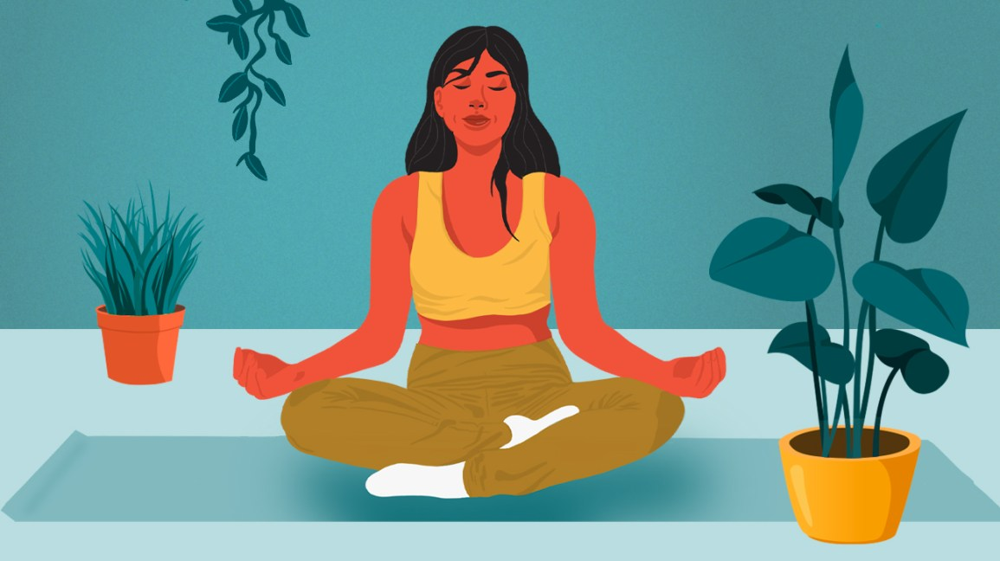

Why is meditation important?.

"Meditation, which is the practice of focused concentration, bringing yourself back to the moment over and
over again, actually addresses stress, whether positive or negative." Meditation can also reduce the areas
of anxiety, chronic pain, depression, heart disease and high blood pressure.
Understanding Meditating
Meditation has been practiced for thousands of years. Meditation originally was meant to help deepen understanding of the sacred and mystical forces of life. These days, meditation is commonly used for relaxation and stress reduction. Meditation is considered a type of mind-body complementary medicine. Meditation can produce a deep state of relaxation and a tranquil mind. During meditation, you focus your attention and eliminate the stream of jumbled thoughts that may be crowding your mind and causing stress. This process may result in enhanced physical and emotional well-being
Meditation has the ability to slow down racing thoughts, to ease an overly stressed brain, and to nurture a tired soul, so that peace can be transferred to the rest of the body and the potential for healing on many levels can open up. When considering wellness for the body, mind, or spirit, meditation can be one of the best things to do. But why is meditation so powerful? It has the ability to slow down racing thoughts, to ease an overly stressed brain, and to nurture a tired soul, so that peace can be transferred to the rest of the body and the potential for healing on many levels can open up. Many experts have made connections between mental, or emotional, difficulties and physical ailments or health challenges. They know that stress can cause digestive disorders and skin irritations, along with a host of other problems. Health professionals and holistic healers realize that busy and frazzled minds, and even minds that seem to have it all together but are full all the time, do well to take a break once in a while and settling down to focus only on simple things. This could be the bodies breath, posture, or heartbeat. This focus can lead to more appreciation for being alive, to moments of joy that may have previously been non-existent
Some Elements of Meditation..

Different types of meditation may include different features to help you meditate. These may vary depending on whose guidance you follow or who's teaching a class. Some of the most common features in meditation include. Don't let the thought of meditating the "right" way add to your stress. If you choose to, you can attend special meditation centers or group classes led by trained instructors. But you can also practice meditation easily on your own. And you can make meditation as formal or informal as you like, however it suits your lifestyle and situation. Some people build meditation into their daily routine. For example, they may start and end each day with an hour of meditation. But all you really need is a few minutes of quality time for meditation.
Breathe Deepply..
This technique is good for beginners because breathing is a natural function. Focus all your attention on your breathing. Concentrate on feeling and listening as you inhale and exhale through your nostrils. Breathe deeply and slowly. When your attention wanders, gently return your focus to your breathing.
Walk and Meditate
Combining a walk with meditation is an efficient and healthy way to relax. You can use this technique anywhere you're walking, such as in a tranquil forest, on a city sidewalk or at the mall. When you use this method, slow down your walking pace so that you can focus on each movement of your legs or feet. Don't focus on a particular destination. Concentrate on your legs and feet, repeating action words in your mind such as "lifting," "moving" and "placing" as you lift each foot, move your leg forward and place your foot on the ground.
Importance of Meditation
Concentrative meditation involves focusing all of your attention on a specific object
while tuning out everything else around you. The goal is to really experience whatever
you are focusing on, whether it's your breath, a specific word, or a mantra in order to
reach a higher state of being.
Meditation can give you a sense of calm, peace and balance that can benefit both your
emotional well-being and your overall health. And these benefits don't end when your
meditation session ends. Meditation can help carry you more calmly through your day and
may help you manage symptoms of certain medical conditions.